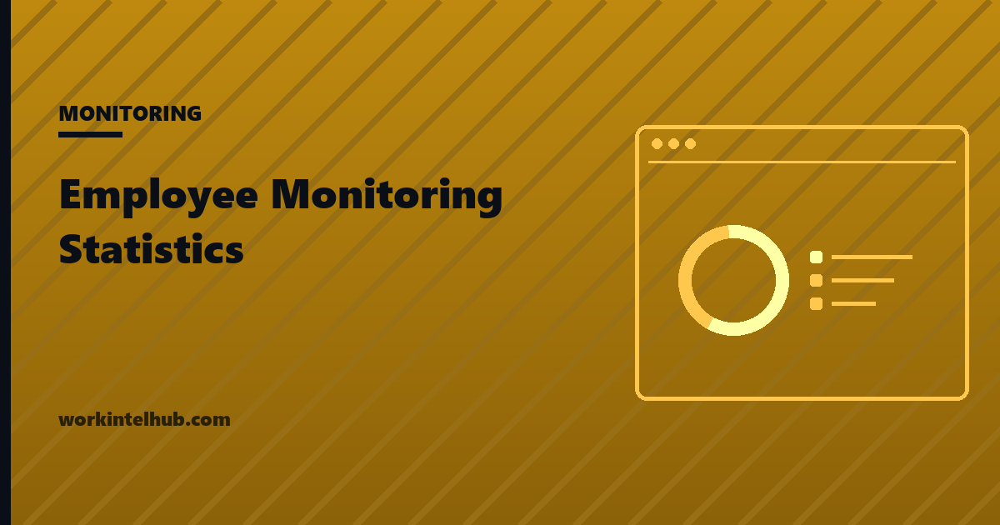
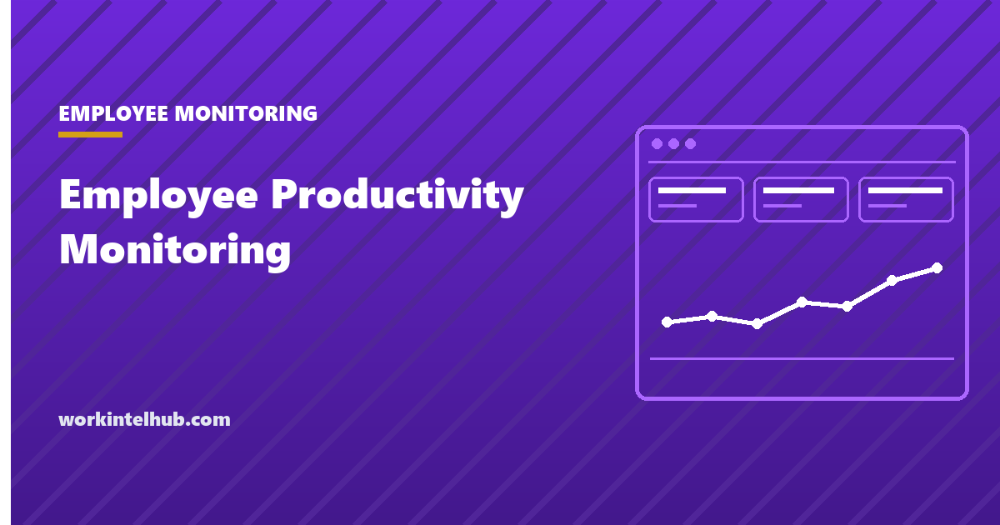
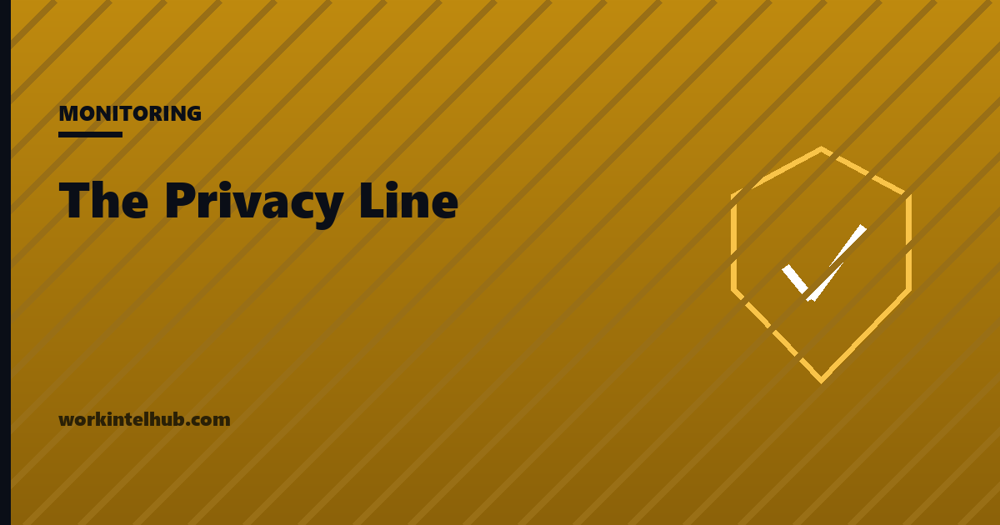
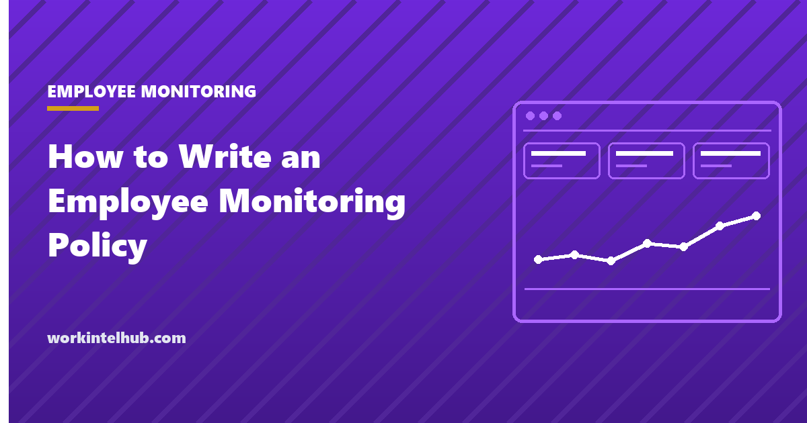

Employee MonitoringEmployee Monitoring Statistics in 2026 US Managers Can Actually Trust
Employee monitoring statistics from named primary sources only: Pew, Microsoft and New York law, with samples and fielding dates.
Topic
Employee monitoring covers any system that records what people do at work. The question is rarely whether it is technically possible and almost always whether it is proportionate, disclosed, and worth what it costs in trust. Pew Research Center found in April 2023 that most US adults oppose the more intrusive forms before they hear any justification, which is the position any rollout starts from. These articles cover the tests a proposal should pass, the data types worth refusing outright, how to write a policy people will actually sign, and what New York law requires in writing before monitoring begins.
New to this topic? Employee Productivity Monitoring: An Ethical Playbook is the piece we would read first.

Employee MonitoringEmployee monitoring statistics from named primary sources only: Pew, Microsoft and New York law, with samples and fielding dates.

Employee MonitoringHow to run employee productivity monitoring responsibly: four tests every proposal should pass, and what US notice law expects first.

Employee MonitoringSix kinds of data employee monitoring should never collect, why each costs more in trust than it returns, and a test for anything new.

Employee MonitoringA section-by-section guide to writing an employee monitoring policy that meets US notice rules and commits you to real limits.